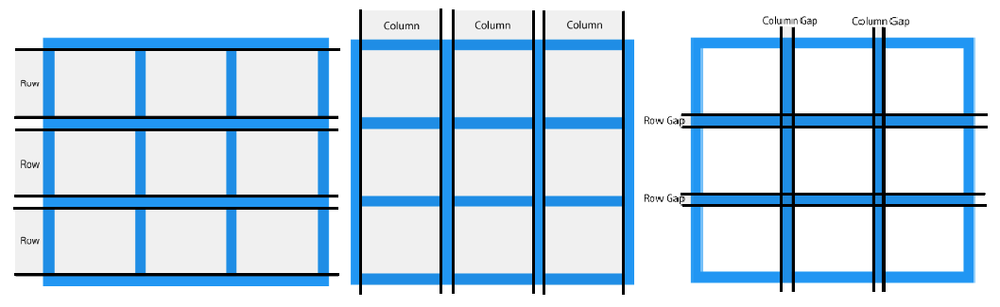

El diseño mediante el módulo CSS Grid ofrece un sistema de diseño basado en cuadriculas con filas y columnas, facilitando el diseño de la estructura de una página web al no necesitar usar float y posicionar los elementos en la página.
Un diseño basado en cuadriculas se compone de un elemento padre con uno o más elementos hijos emparentados al mismo. En el siguiente ejemplo se crea un contenedor a partir de un elemento div al que se le asigna la clase grid-container y dentro del mismo, asignamos los hijos a partir de más elementos div a los cuales se les asigna la clase grid-item.
El elemento padre debe tener la propiedad display configurada como grid (para comportarse como un elemento en bloque) o en inline-grid (para comportarse como un elemento inline), con esto los elementos hijos directos del contenedor se convertiran automaticamente en grid items. Recordemos que los elementos en bloque buscarán ocupar todo el ancho disponible en la pantalla y provocarán saltos de línea, mientras que los elementos inline ocupan solo el ancho necesario según el contenido del mismo y no provocan saltos de línea.
Cuando se elabora un contenedor, vemos que los items del mismo estan ordenados por filas (rows) y columnas (columns), las cuales a su vez estan separadas entre si por una brecha (gaps), la cual se define como el espacio entre los items del contenedor.
Es posible editar el gap de los items. Para esto se debe usar dentro de la clase del contenedor algunas de las propiedades en el próximo ejemplo.